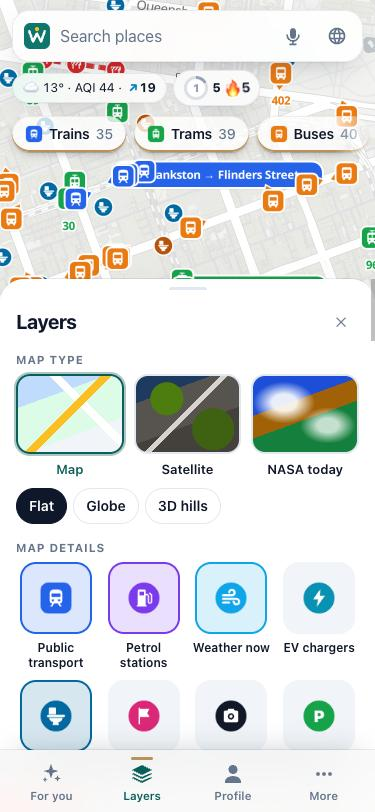

The nearest public toilet, anywhere in Australia.
Turn on the Public toilets layer and the toilets in the Australian Government's National Public Toilet Map appear, more than 20,000 of them, with opening hours, whether it's open right now, accessible and unisex facilities, baby change, showers and parking.
Outside Australia, Wayaroo shows toilets from OpenStreetMap, so the layer keeps working when you travel.

Customer toilets too
When the nearest public toilet is far, the nearest usable one often isn't: shopping centres, libraries, fast-food chains like McDonald's, KFC and Hungry Jack's, and servos that say they have a toilet for customers. Wayaroo shows these as well, marked so you know they're customer toilets, with the opening hours where they're known.
Made for the moment you need it
- Open now or closed is shown on each one, from its hours.
- Accessible toilets are marked, for wheelchairs and for anyone who needs the space.
- Tap for directions on foot or by car, in one step.
- Works in 20 languages, with no account and nothing to set up.
Accessible toilets and the MLAK key
Many accessible toilets in Australia are locked to keep them clean and free for the people who need them. They open with the MLAK (Master Locksmiths Access Key), one key that fits accessible toilets, change rooms and some lifts across the country. People with a disability or a medical condition, and their carers, can buy a key through the Master Locksmiths Association. The National Public Toilet Map records which toilets have an MLAK lock, and Wayaroo shows it on the toilet's card.
Changing Places toilets are larger accessible toilets with a ceiling hoist, an adult-sized change table and room for two carers. They are for people who cannot use a standard accessible toilet. There are fewer of them, so it helps to know where they are before a day out.
Tips for a day out or a long drive
- Check the hours before you go. Park toilets often close at dusk, and toilets in shopping centres close with the centre. The card says if a toilet is open now.
- On a road trip, rest areas and roadhouses are the usual stops. Turn on the toilets layer and look ahead along your route before you leave a town.
- Train stations in Melbourne and Sydney often have toilets, but not every station, and some are open only when the station is staffed.
- Baby change rooms are recorded where councils report them; shopping centres and libraries usually have one.
Good to know
The National Public Toilet Map is maintained by the Australian Government with councils and is updated regularly, but toilets close for maintenance and hours change. If one is wrong, email us and we'll pass it on. Community centres and libraries in Victoria are shown as likely toilets from Vicmap data.
Free, no account, 20 languages. For iPhone, iPad and Android.
Toilet data: National Public Toilet Map, Australian Government (CC BY 3.0 AU); OpenStreetMap contributors (ODbL) elsewhere. See the data credits.